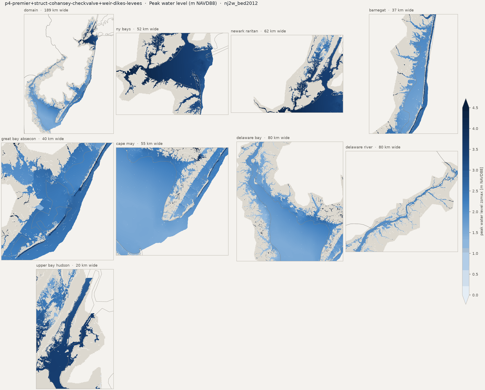
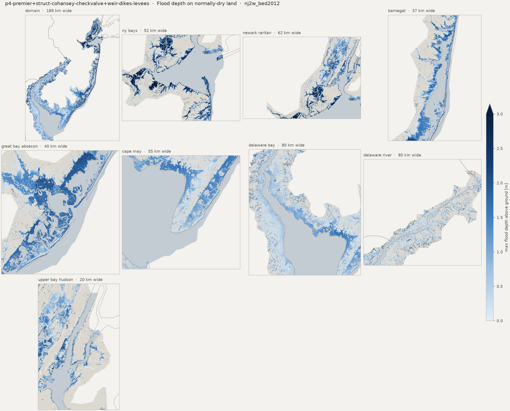
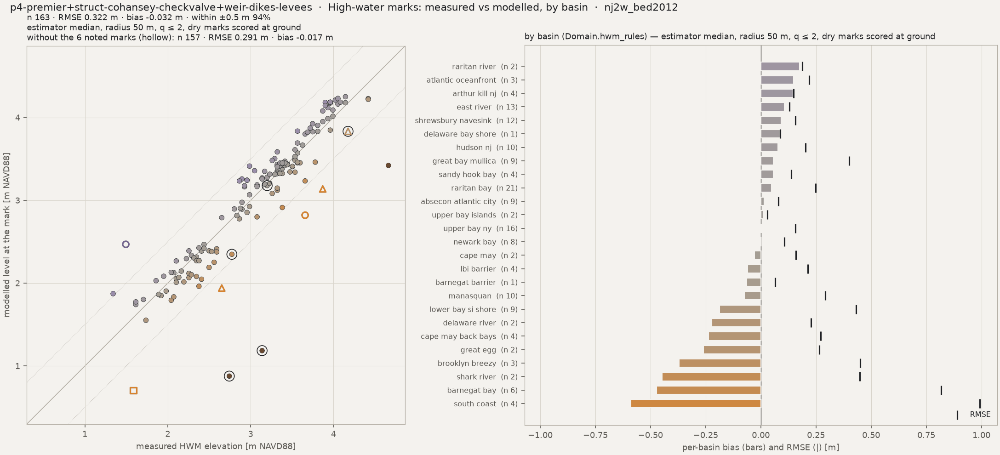
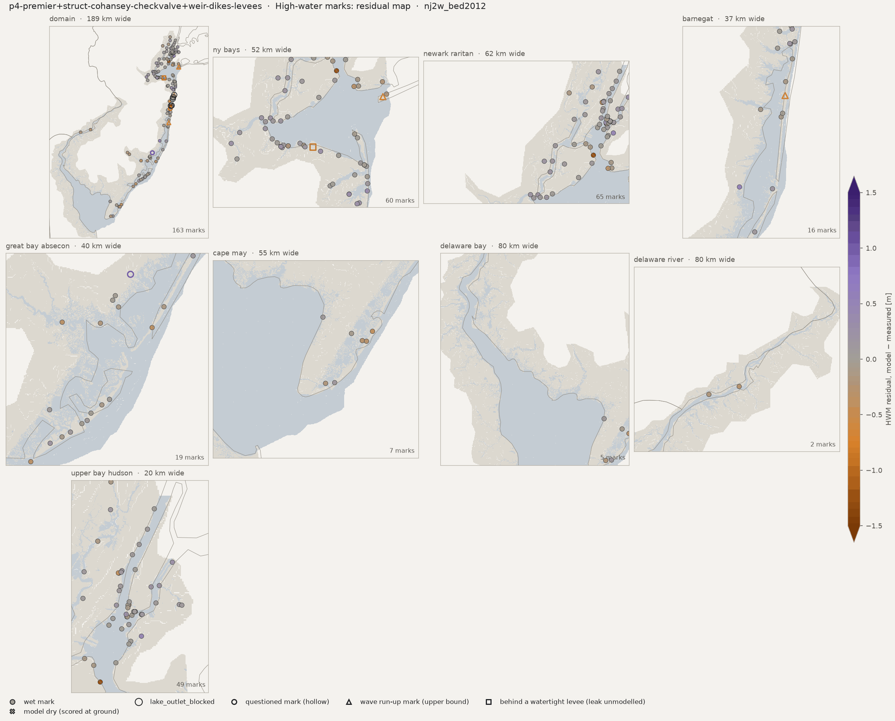
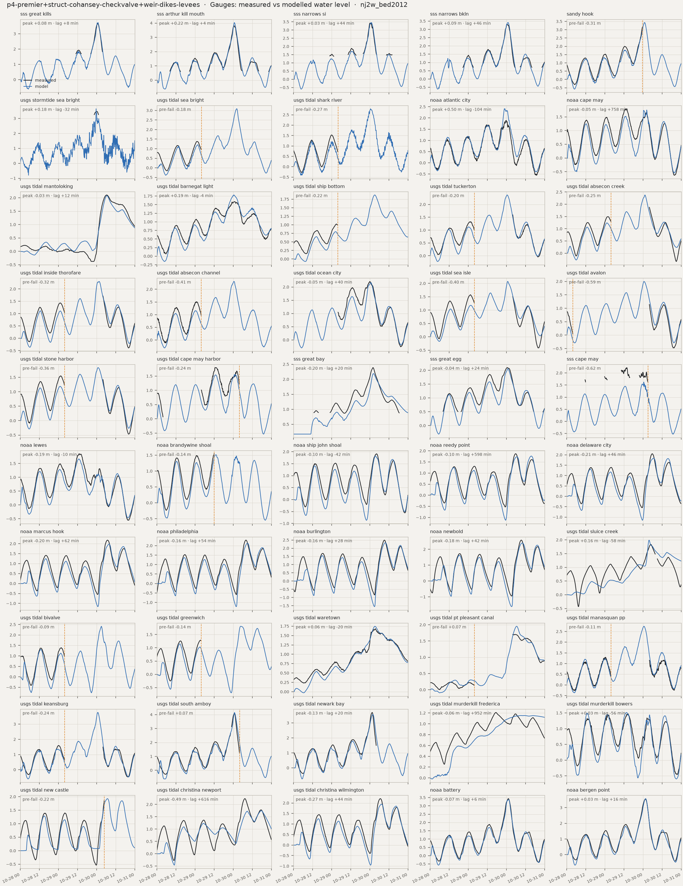
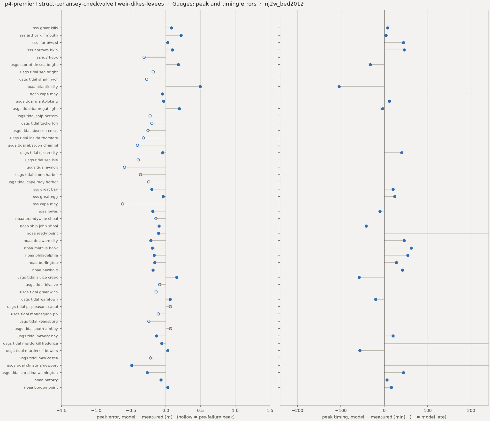
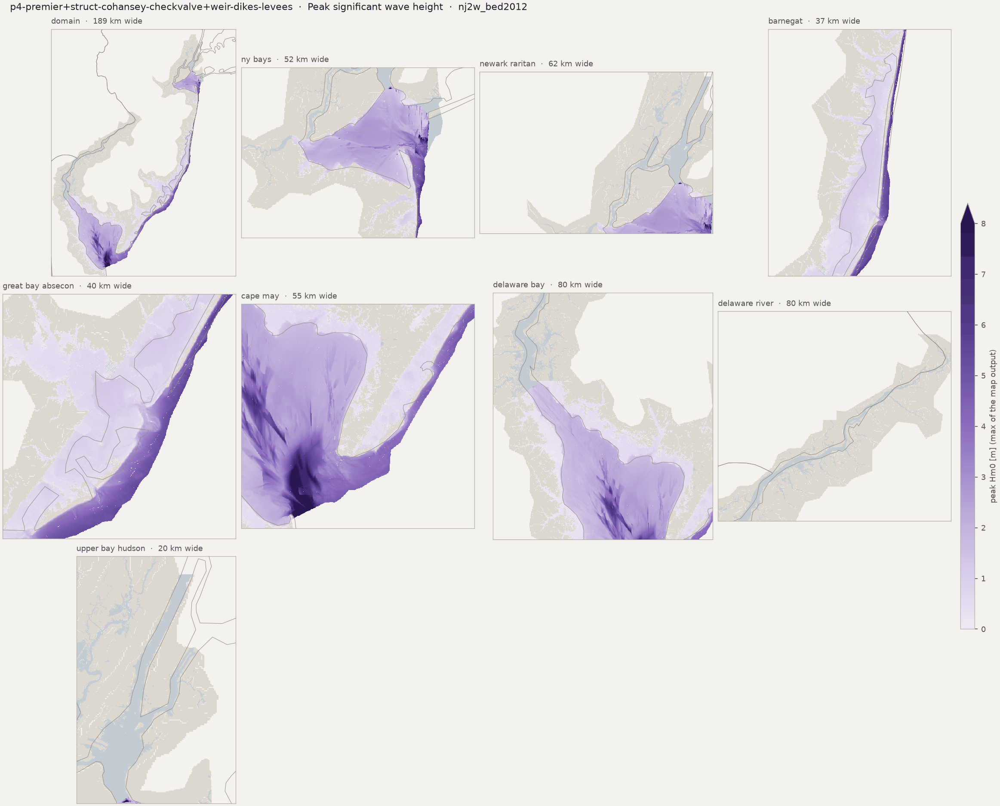

Hurricane Sandy flood model: Model 2.0.0 at a glance
A compound-flood hindcast of Hurricane Sandy (28-31 October 2012) on the New Jersey coast and New York Harbor: storm surge, waves, wind, rain and river flow together, checked against tide gauges, USGS high-water marks and FEMA's mapped flood extent. This page shows the current model version, 2.0.0: its scores and figures, what is in it, its known limits and what is coming next.
Preliminary research diagnostics — not peer-reviewed results.
Scores
High-water marks: Model 2.0.0 (2012 ground) (run p4-premier+struct-cohansey-checkvalve+weir-dikes-levees)
USGS high-water marks of good or excellent quality. The model's value at a mark is the median peak water level of flooded ground within 50 m of it. RMSE is the typical error; bias the average error (negative = the model reads low). Scored on the full-resolution (3.125 m) flood map.
FEMA flood extent: MOTF reference: 2.0.0 with rain off (run p4-premier+rain-off+struct-cohansey-checkvalve+weir-dikes-levees)
Agreement with FEMA's map of Sandy's surge (the MOTF extent) on New Jersey land; the model counts as flooded where the peak water is at least 0.15 m deep. CSI: of all the land either map floods, the share both flood. POD: the share of FEMA's flooded land the model also floods. FAR: the share of the model's flooded land FEMA left dry. km² excl.: land outside New Jersey, which FEMA's map does not cover, not scored. Rain is off for this comparison because FEMA mapped the surge: rain ponding inland would count as false alarms. Switching it off also loses some real hits that rain helped to make (POD 0.86 with rain on, 0.83 off).
Figures
Click a figure for the full-size image.
Peak water level


Flood depth on land that is normally dry


Peak water at the USGS high-water marks


Where the model reads high or low at the marks


Flood extent compared with FEMA's map of Sandy's surge

Water level through the storm at the tide gauges


Storm peak at the gauges: height and timing


Peak wave height


What is in Model 2.0.0 (nj2w_bed2012 / p4-premier+struct-cohansey-checkvalve+weir-dikes-levees)
Model version 2.0.0, on the 2012 ground (run 2026-11-17). A new, larger model grid: the Hudson waterfront and Upper New York Bay are now computed. Storm forcing and physics are those of version 1.1.0. At 163 high-water marks the typical error (RMSE; the model's value is the median peak level within 50 m of each mark) is 0.32 m, and the model reads 0.03 m low on average. On the 119 marks that version 1.1.0 also scores, the typical error is the same (RMSE 0.346 against 0.348 m): the new area adds marks without changing the old ones. As of 2026-11-18.
- The Hudson waterfront and Upper New York Bay: the model reaches up the Hudson to about 40.86 N and through the Upper Bay and the East River to Hell Gate, so Hoboken, Jersey City, Bayonne's Upper Bay shore and the facing New York waterfront are computed instead of left out. The storm tide is now applied at two short cuts across the Hudson and the East River instead of at the Narrows and the Kill van Kull.
- 44 more high-water marks scored (163 in all), 41 of them in the new area, and two more tide gauges checked: the Battery and Bergen Point.
- Piers sorted one by one: piers on piles let water flow underneath, so the ground under them is the harbour bed; piers on solid fill are land.
- Channels from surveys: Newtown Creek, the Gowanus Canal (the upper canal's depth is assumed) and the 2012 Army Corps survey of the Hudson channel, each converted to the land elevation datum. Narrow New York channels run on 25 m cells.
- Dikes and levees: 24 more dikes and levees now hold water back, most on the New Jersey and Delaware shores of Delaware Bay, a few on the Delaware River (Pennsylvania side) and the Atlantic back bays. The Chester levee was redrawn so it no longer dams Chester Creek, the broken Port Penn tide gate is open, and the Cohansey River's Bacons Neck tide gate works one way (water drains out, the tide cannot come in). In a paired test without waves, they change no score measurably.
- Two leaks at the model's outer edge closed (Astoria Park in Queens, and east of Millville); they mattered only in sea-level-rise tests, not in Sandy itself.
- The wave-forcing line along the ocean shore is redrawn on the new ground (about 200 of its 7,900 links move, at the inlets and at Long Branch).
Known limitations of Model 2.0.0
Read the figures with these in mind. As of 2026-11-18.
- The ground does not move during the storm. In Sandy the dunes eroded and broke through in places (Mantoloking, Wreck Pond) and the sea washed over into Deal Lake; in the model the dunes stand all storm. Erosion is planned for a later version.
- The Monmouth coastal lakes (Wreck Pond, Deal Lake and three others) read up to about 2 m too low for that reason. Do not use the model's peak water level in those lakes.
- Water level, not wave splash: the model computes the water surface, including the rise that breaking waves cause, but not the splash and run-up of individual waves. High-water marks left by splash sit above what the model can reach.
- Agreement with FEMA's flood extent is slightly lower than version 1.1.0's (CSI 0.795 against 0.803 with rain on; 0.797 against 0.803 scored on exactly the same land). Most of the difference is in the Hackensack Meadowlands and around Newark Bay, where 2.0.0 peaks about 15 cm lower and leaves some marsh dry that FEMA mapped as flooded. The likely cause is that 2.0.0 computes New York Harbor itself instead of taking its water levels from a regional model at the Narrows; this is not yet tested directly. A smaller part is farmland and marsh that the new Delaware Bay and Tuckahoe dikes keep dry. At the Newark Bay high-water marks 2.0.0 fits better than 1.1.0.
- Waves are not computed in the Upper Bay, the Hudson, the East River or Newark Bay: the wave-height map is blank there by design.
- The New York side runs on coarser cells away from its narrow channels, and without New York buildings (New Jersey's buildings are in the model as solid blocks), and FEMA's flood map stops at the state line, so the New York extent is checked only by the high-water marks.
- The Delaware Bay and River: the storm's low water is too low upriver, the peak reads about 0.2 m low at the upriver gauges, and only a few high-water marks there can check it.
- Several New Jersey back bays read low at the high-water marks (median, 50 m): Barnegat Bay about 0.5 m (6 marks), Cape May's back bays about 0.2 m (4 marks); the cause is being investigated.
- Behind the levees (Elizabeth, Rahway and the Delaware Bayshore dikes) no observation checks the model: those areas stay dry because the levees are assumed to hold for the whole storm (no failures).
- Not in the model: the Hudson above about 40.86 N, the East River above Hell Gate, rivers above today's head of tide, storm drains and culverts. A blank area on a map there means not computed, not dry.
- Small inland creeks that enter on large cells (the Salem River at Woodstown, some Pennsylvania and Delaware creeks) pile water up unrealistically: do not read depths there.
- The wind data cannot resolve the narrow back bays, and some peak wave heights at the Narrows and the Delaware Bay mouth are not physical (they do not affect the published water levels shown here).
Coming in version 2.0.0 on today's (2026) ground
In preparation. Preliminary: items may still change. As of 2026-11-18.
- The same storm on an estimate of today's (2026) ground: channels dredged since 2012, today's shoreline, levees and tide gates. The ground is built; the run is next. It answers which of today's power plants and substations a Sandy-like storm would flood.
Details
- All runs on nj2w_bed2012 (table of scores) · view runs one at a time or side by side
- p4-premier+rain-off+struct-cohansey-checkvalve+weir-dikes-levees — MOTF reference: 2.0.0 with rain off: run card, flags, every figure, full score row
- p4-premier+struct-cohansey-checkvalve+weir-dikes-levees — Model 2.0.0 (2012 ground): run card, flags, every figure, full score row